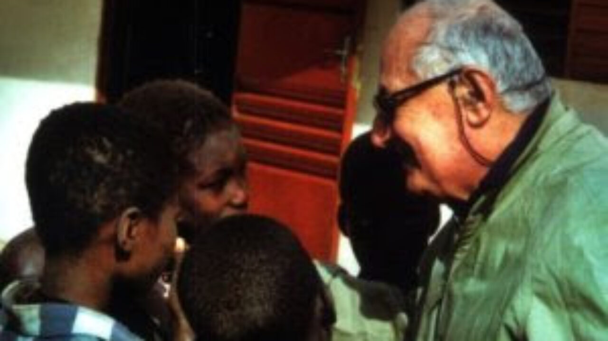

Spazio per una fotografia
Sosteniamo le necessità alimentari e scolastiche del bambino, offrendo un aiuto concreto e importante anche alla sua famiglia.
Scopri il progetto →Da Catania al Burkina Faso, promuoviamo iniziative di solidarietà, istruzione e sostegno alle comunità. Un impegno fatto di persone, relazioni e aiuti concreti.

Il Gruppo Volontari Burkina ETS riunisce persone che desiderano sostenere, con continuità e spirito di servizio, progetti a favore delle comunità del Burkina Faso.
Attraverso il rapporto con realtà locali, scuole, strutture sanitarie e comunità, contribuiamo a realizzare interventi nei settori dell'istruzione, dell'acqua, della salute e dell'autonomia delle persone.
[Da integrare: anno di nascita del gruppo, storia, valori e modalità di collaborazione con i partner locali.]
Progetti diversi, un unico obiettivo: accompagnare persone e comunità verso opportunità concrete.
Sosteniamo le necessità alimentari e scolastiche del bambino, offrendo un aiuto concreto e importante anche alla sua famiglia.
Scopri il progetto →Sosteniamo percorsi scolastici e universitari, offrendo la possibilità di formarsi e ricevere un pasto durante la giornata scolastica.
Scopri il progetto →Contribuiamo alla realizzazione e alla manutenzione di pozzi d'acqua potabile, per favorire l'accesso a una risorsa essenziale per la vita quotidiana.
Scopri il progetto →Favoriamo l'accesso ad ausili come le carrozzine, per sostenere la mobilità e una maggiore autonomia personale.
Scopri il progetto →Aiutiamo a sostenere interventi sanitari e chirurgici e percorsi di cura per persone in condizioni di difficoltà.
Scopri il progetto →Sosteniamo iniziative e strumenti per attività produttive locali, come sementi e attrezzi agricoli per la realizzazione di orti.
Scopri il progetto →Dati riportati nella comunicazione del 15 novembre 2025. Da aggiornare prima della pubblicazione definitiva.
Le storie raccontano meglio di ogni numero il significato dei progetti e il legame con le comunità locali.
[Inserire qui una testimonianza, il racconto di uno studente, di una famiglia, di un insegnante o di un partner locale. Raccontare il progetto, il bisogno a cui risponde e i cambiamenti resi possibili.]
Sostieni i nostri progetti →Puoi sostenere un percorso scolastico, contribuire a un progetto per l'acqua, aiutare una persona ad accedere alle cure o partecipare alle altre iniziative del gruppo.
Ogni contributo, piccolo o grande, diventa parte di un impegno condiviso.
Contattaci per saperne di piùScrivici per conoscere le modalità aggiornate per sostenere i progetti, diventare volontario o proporre una collaborazione.
Puoi contribuire con una donazione oppure destinare al Gruppo Volontari Burkina ETS il tuo 5×1000.
Codice fiscale 93261390871